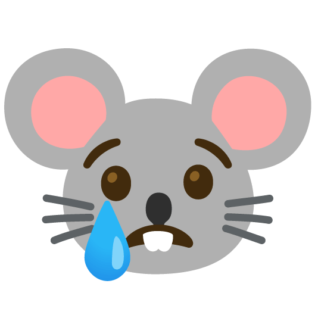

🛠️ Resources and Tools
Required Tools
Equipment
You need a 3-button mouse with scrollwheel for this course.
⚠️ ALWAYS BRING YOUR MOUSE TO CLASS! 
Software
For more info on setting up Unity, Visual Studio / Code, and Blender, refer to the Tech Setup page.
We will be using the following programs:
- Adobe Creative Apps -- Install the latest version of After Effects and Photoshop onto your computer.
- Blender -- Install Blender on any devices you plan to use for your projects outside the classroom, just make sure you have the same version as whatever's on the classroom computers. Here is an archive of their version releases.
- Unity -- Please install Unity Hub and get any LTS version of Unity Editor between 2021~2023.
⚠️ DO NOT USE UNITY 6!
- Visual Studio -- Install Microsoft Visual Studio or Visual Studio Code, you should have the option to do this when installing Unity.
- Mixamo -- Mixamo is a useful, but limited, free in-browser auto-rigging application. We will use Mixamo for a quick exercise later in the quarter. All you need to do is make an account with Mixamo to use it in browser.
Recommended Tools
Drawing Tablets
While drawing tablets are not required for this class, they are essential for anyone who intends to incorporate digital drawing in their work now and in the future.
We have several cintiq monitors in our classroom, and drawing tablets available for checkout at the 4th floor tech support office. These are only available for classroom use.
If you intend to purchase one for personal use outside the classroom, here are some recommendations:
- Wacom tablets are the most reliable brand you can get.
- Wacom Intuos is one of their cheapest options, it doesn't have a display.
- Wacom One is more costly and comes with a display. I personally use this one, too. It's a good investment if you like drawing digitally, and can double as a second monitor.
- Huion H640P is another good budget option.
- Most surface or tablet devices, and even iPhones, can be paired with desktop PCs and Macs (depending on which OS they're compatible with.)
- iPads can be paired with Mac using the Sidecar feature, and be paired with PCs with DuetDisplay for a subscription fee.
- iPhones can mirror your Mac desktop using Yam Pad and a USB connection to your Mac device. You can also get a stylus like this to use your phone as a mini pen tablet. However, this option does not include pen pressure sensitivity.
Audio resources
- freesound.org -- Audio database that can filter searches by license type. Login required for downloading files. Good sampling source for sound effects and music tracks.
- Audacity -- free software for recording and editing audio; the version without Muse Hub should suffice for your purposes.
- Petaporon is a free minimalist piano roll sequencer you can use on the browser.
- Lovely Composer is a beginner-friendly music editor for $9 that is easy and fun to use. It comes with several chord templates and beat loops you can get started with, which is especially useful if you're completely new to music-making.
For more asset creation tools, there's also this exhaustive list of cheap and free tools compiled by Everest Pipkin -- check out their section on sound and music-making tools.
Animation resources
- The Animator's Survival Kit by Richard Williams is available on the Internet Archive for free!
- Video to Riso Animation with contact sheet templates provided
- Greenscreen Animals has video footage of various animals performing different actions.
CG resources
- Polycount Wiki is a good reference for looking up terminology and formal principles related to 3D modelling.
- RISD's Nature Lab Collection includes links to their 3D models and images of animals, plants, human anatomy, and other natural specimens -- useful reference materials for drawing or modelling!
C# scripting and Unity development
- Unity documentation -- Scripting Reference and Editor Manual.
- Community Forums -- Stack Exchange, Unity Discussions.
- Learn C# in One Day and Learn it Well by Jamie Chan.